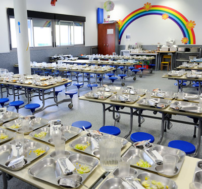

Familias
Comedor con cocina propia
Nos preocupamos por la salud y el bienestar de nuestros alumnos. Conscientes de nuestro papel en el desarrollo de hábitos de vida saludables, nos esforzamos cada día por ofrecer el mejor servicio.
La elaboración de los menús está compuesta por productos frescos, de temporada y primera calidad. Cada uno de ellos se adecúa en función de las necesidades de las diferentes etapas del centro por nuestro equipo de nutrición y cocina.
Las alergias e intolerancias alimenticias son atendidas con especial rigor. Contamos con hasta diez menús diferentes para adaptarnos a las necesidades de los alumnos que acrediten la imposibilidad de ingerir determinados alimentos que perjudican su salud: gluten, lactosa, legumbres, frutos secos, etc.
Estrategia NAOS
Según la Organización Mundial de la Salud, seis de los siete principales factores determinantes de la salud están ligados a la práctica de actividad física y a la alimentación. Por ello fomentamos la Estrategia NAOS (Nutrición, Actividad Física y Prevención de la Obesidad), bajo la premisa «Come sano y muévete».
- Base de la pirámide, a diario y varias veces: arroz, pastas, patatas, verduras, hortalizas, frutas, lácteos y aceite de oliva.
- Nivel intermedio, varias veces cada semana: carne, pescados, huevos, legumbres y frutos secos.
- Cúspide, ocasionalmente: dulces, helados y refrescos.
- Y siempre, beber agua: cuanta más, mejor.
Descargas
Menús disponibles
Menús en PDF publicados por el centro. Se actualizan cada mes.
Alimentación saludable